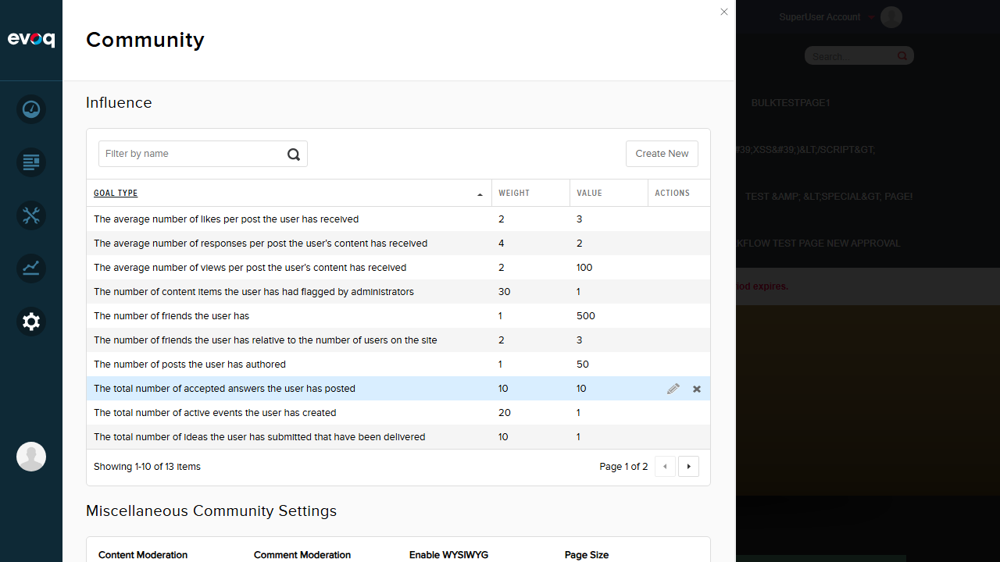
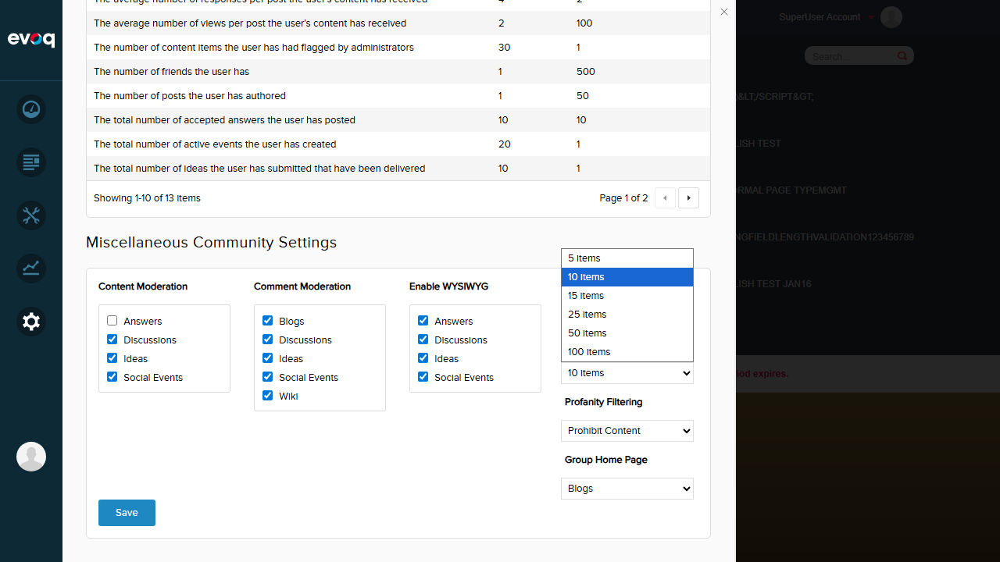
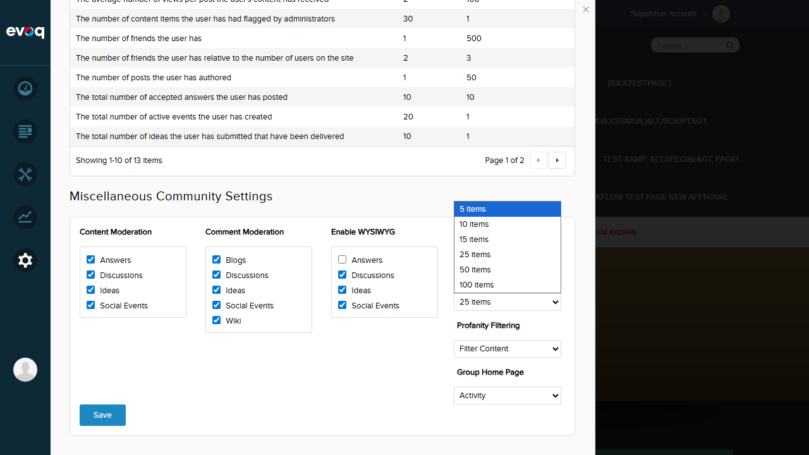
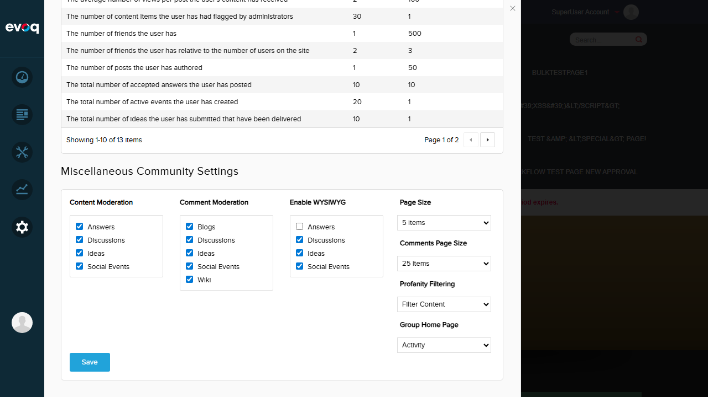
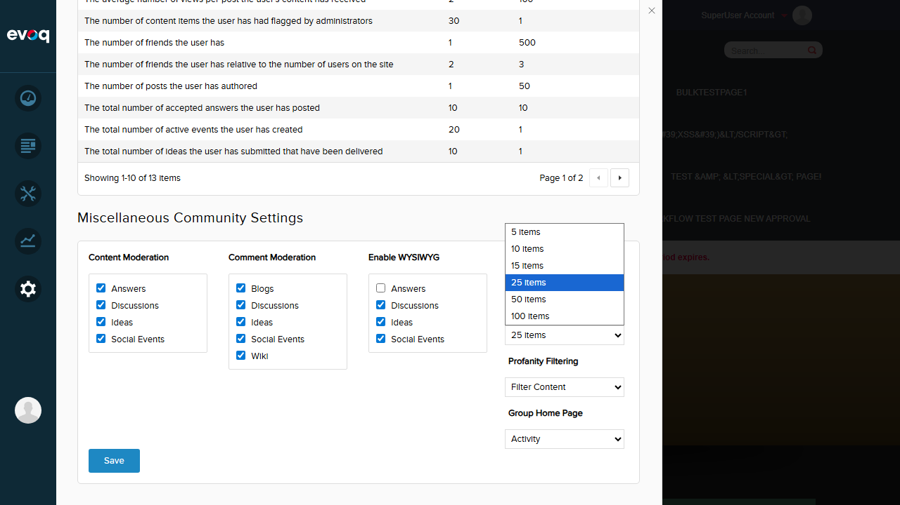

Status: PASS
What was tested:
Verified that the Comments Page Size dropdown displays all expected options: 5, 10, 15, 25, 50, and 100 items.
Steps taken:
- Logged in as SuperUser (host)
- Navigated to Settings > Community in the PersonaBar
- Located the "Miscellaneous Community Settings" section
- Clicked on the Comments Page Size dropdown to expand options
- Verified all 6 options are displayed
Screenshot - Community Settings Panel:

Screenshot - Dropdown Expanded with All Options:

Result:
The dropdown correctly displays all 6 options: 5 items, 10 items, 15 items, 25 items, 50 items, and 100 items. Default value is 5 items.
Status: PASS
What was tested:
Changed the Comments Page Size from default (5 items) to 25 items and saved the settings.
Steps taken:
- Selected "25 items" from the Comments Page Size dropdown
- Clicked the Save button
- Verified "Item successfully saved" confirmation message appeared
Screenshot - Selected 25 Items:

Screenshot - Settings Saved:

Result:
The Comments Page Size was successfully changed to 25 items and saved. Confirmation message displayed.
Status: PASS
What was tested:
Verified that the Comments Page Size setting (25 items) persists after navigating away and returning to the Community Settings.
Steps taken:
- Navigated to the home page (full page refresh)
- Returned to Settings > Community in the PersonaBar
- Verified the Comments Page Size dropdown still shows "25 items"
Screenshot - Settings Page After Refresh:

Screenshot - Persistence Confirmed (25 Items Selected):

Result:
The setting successfully persisted. After page refresh, the Comments Page Size dropdown correctly shows "25 items" as the selected value.